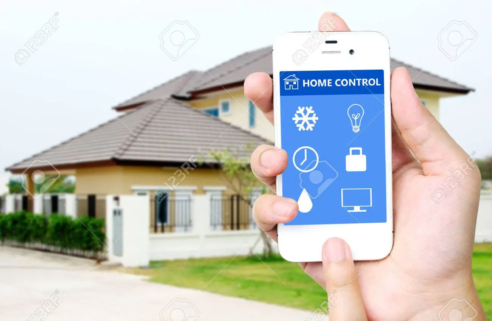

Nutikodu ehk tark kodu (inglise keeles smart home) on koduseadmete kasutamise ja nende tarbimise kontrollimine kas käsitsi või automaatselt.
Alguse sai kodu targemaks ja oma töö tegemise lihtsamaks muutumine sellega, kui hakati tootma pesumasinaid ja muid tänapäeval juba väga tavalisi seadmeid.
On ka seadmeid, mis sellesse süsteemi ei kuulu, samuti ei saa interneti kaudu ühendust kõigi lülititega. Kodused seadmed ja kontrollpult suhtlevad nutistu kaudu.
Riistvara võib ka sisaldada sensoreid (näiteks kaamerate ja termomeetrite omi), regulaatoreid ja suhtlemiseks vajalikke süsteeme.

Ekraanid targas majas saavad ühendada sind majaga ja anda paremat tagasisidet mis sinu majas toimub. Näiteks
saab visualiseerida mis aknad on lahti, mis temperatuur on erinevates tubades ja kui palju enegriat kasutstakse. Võimalusi
on, siin lõpmatu. Sammuti saab kõik ekraanid majas ühendada sedasi, et kõik näitaks samat kanalit, et näiteks kui
sa tahad minna kööki tähtsa jalgpalli mängu ajal saad köögis samas kanalis samat mängu edasi vaadata ilma, et
milleksi puudu jääd.
Kütte automatiseerimine majades on tänapäeval elementaarne. Ilma kütte automaatikata tuleks koguaeg radiaatorite
kraane lahti ja kinni keerata, katlasse kütet juurde andma ja kotrollima ega rõhud liiga suureks ei läheks
Selleks, et maja kütet automaatselt juhtida, on vaja juhitavat soojusallikat (gaasi -, pelleti katel, kaugkütet jne.),
temperatuuriandurit, automaatika keskus (PLC), reguleerventiile ja küttekehasid millega tuba kütta. Protsess
algab sellest, et temperatuuriandur mõõdab toa temperatuuri ja saadab selle info automaatika keskusesse
mis võrdleb toa temperatuuri ja seadetemperatuuri, mida inimesed tahavad (sisestatakse ruumi regulaatorisse).
Kui toa temperatuur on tahetust temperatuurist väiksem, siis automaatika keskus saadab signaali
regulaatorile, mis avab mootorventiili ja laseb sooja vee küttekehadesse ning temperatuur küttekehas tõuseb.
Ventilatsioon eramajades tavaliselt puudub aga alati saab ventilatsioonisüsteemi koos kaasaaegse autmaatikaga lisada.
Kaasaegne soojustagastusega ventilatsioon võimaldab välistada akende avamist ja sulgemist ning külma välisõhu
otse tuppa laskmist. Ventlatsiooni agregaadid eramajades on tavaliselt väiksed ja asuvad pööningutel. Ventilatsiooni
agregaadis on klapp, filter, ventilaator, CO2 andur, soojustagast ja kütte- ja jahutuskalorifeer. Soojustagasti on selle jaoks,
et ruumi soe õhk, mis välja läheb, soojendaks üles väljast tuleva, ruumi sissepuhutava külma õhu. Selline energia säästmine
on väga tähtis talvel, sest sooja õhu välja viskamineie akna kaudu on enerigat raiskav ja tekitab diskomfortse sisekliima.
Automaatika ventilatsioonis on väga lihtne: kui CO2 andur mõõdab, et CO2 on liiga palju, siis lükkab automaatika
keskus ventilatsiooni agregaadi sisse seniks, kuni CO2 tasemed toas on normaliseerinud.

Uksi "tehakse targaks" tavaliselt suurtes hoonetes. Seal kasutatakse tavaliselt sisepääsu kaarti. Sellise süsteemiga on
võimalik dokumenteerida kes kuhu läks ja millal. Kaartidega sisenemine ruumidesse on ka natuke mugavam kui võtmetega.
Kaasaegsemates hoonetes saab ka teha nii, et uksed lähevad ise automaatselt lahti, kas sõrmejäljega, näotuvastusega
või telefoniga.
Kui sa tahaks et sinu maja oleks 100% "tark", siis tuleks lülititest loobuda. Kõik käsud, mida sa tahad majale anda
peaks maja anduritega ära lugema ja automaatselt ära tegema. Lülititega pead sa ise manuaalselt majale signaali
andma, aga tarkade majade põhimõtte on selles et kõikidest manuaalsestest toimingutest loobuda.
Targad kaardinad on sellised mis automaatselt lähevad kinni või lahti vastavalt sellele kas päike paistab tuppa või mitte.
Selleks, et kaardinad teaks kas päike paistab sisse või mitte on vaja valgusandurit. Näiteks kui sulle ei meeldi et hommikul
päike silma paistab, siis peab sättestama süsteemi niimoodi et kui kui hommikul valguse andur toas loeb suure valgus
tugevuse, siis elektrimootor sulgeb kaardina.
Tark auto laadimine võib igas majas suureks kasuks tulla. Elektriautot saab kasutada nagu maja energia allikana. Kui sa
saad osa oma energia päikese paneelidest aga päiksest sel hetkel ei ole ja sa ei plaani oma autot kasutada, siis saab sinu enda
elektriauto anda elektrit senikaua kuni päike tuleb tagasi. Sellise süsteemi automatiseerimiseks oleks vaja, et sinu maja
teaks millal sa tavaliselt oma autoat kasustad, et teada kas tohib autolt elektrit laenata. Tänapäeva autodel aga
sellist süsteemi sisse pole ehituatud, et nad saaks elektrit tagasi anda. Probleemiks on ka akude vananemine. Iga kord kui
aku laeb ennast või annab energiat ära on see akudele kahjulik.

Pultidega targas majas on samamoodi nagu lülititega: teoorias neid ei tohiks olla. Reaalsuses aga on peaaegu võimatu teha 100%
tarka maja. Puldid on aga siiski natuke mugavamad kui lülitid. Pulte saab kaasas kanda ja kohapelt liikumatta erinevaid käske anda.

Üks väga suur tarkade majade eelis on energia säästlikus. Kuna sa saad juhtida kaardinaid, temperatuuri, valgust, elektriautot
laadimist ja ventilatsiooni automaatselt ja nutikalt on sul võimalus terve maja sättestada säästliku režiimi peale. Näiteks saab talvel
kaardinaid lahti hoida kui päike on väljas, et soojust sisse lasta ja kaardinaid kinni panna kui päikest ei ole. Saab ka valgustid
välja lülitada automaatselt kui toas on piisavalt päikesevalgust, või panna pesumasin tööle ainult siis kui elektri hind on madal.
Pultide parem alternatiiv on telefon. Telefon saab ka samat tööd teha mida ekraanid teevad. Tänapäeval on telefonide kasutamine
tarkades majades on eriti populaarne. Telefoniga saab kõike tehnosüsteeme juhtida kaugelt läbi internetti ja saada tagasitidet
energia kuludest reaalajas.
Suvisel perioodil saab kasutada automaatseid aknaid mida juhib ilmajaama andur Ventilastiooni süsteemi kasutamine suvel ei ole
otstarbekas ja seega saab lihtsalt aknaid lahti teha siis kui ei saja või tuuled ei ole tugevad. On olemas polariseeritud aknad mis
saavad asendada automaatsete kaardinate tööd. Kui tuppa tuleb liiga palju valgust siis lähevad aknad automaatselt tumedamaks
ja samamoodi saab teha ka vastupidi.
Tulevikus võib olla majades automaatne laadimine. Kui sa tahad enda telefoni laadida ei pea adapterit seina panema vaid majas
on igal pool elektromagnedväli mis automaatselt laeb elektroonilisi seadmeid. Pistikutest aga niipea lahti ei saa.
PLC ehk programmeeritav loogika kontroller on tehnosüsteemide aju. Sellega saab kõike tehnosüsteeme automatiseerida.
Kontrolleris on olemas sisendid ja väljundid. Sisendisse lähevad andurite signaalid ja väljundist tulevad käsksignaalid mis paneb
täiturid tööle. Sisendid saavad olla nii analoogsed kui ka digitaalsed. Analoog sisendid on näiteks rõhu-, temperatuuri- või
veevooluandurid. Digitaalne sisend võib olla näiteks lülitid või mõni kord ka helikäsklus.
Leho Holm